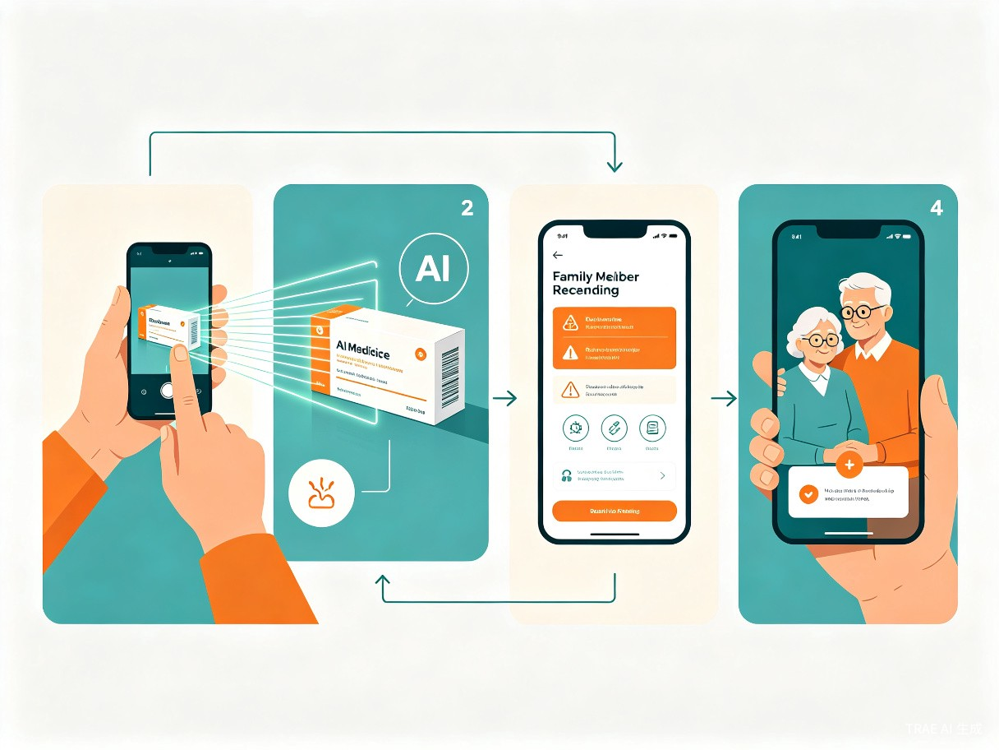

项目概述
中国65岁以上老年人口已超过2.1亿，其中超过78%的老年人同时服用两种以上药物。药品说明书字号微小、医学术语晦涩，大量老年人无法独立理解用药方法、禁忌事项和不良反应，由此导致的用药错误、药物相互作用风险日益突出[1]。
「AI 药品说明书读懂助手」是一款面向银发群体的适老化Web应用。老人只需用手机拍照或上传药品包装图片，AI即可自动识别药品信息，将专业的医学术语转化为大字体、通俗语言、语音播报的形式呈现，同时支持多药相互作用提醒和子女远程关注功能，真正实现"拍一拍，药明白"。
项目定位：社区公益赛道 · 智慧助老方向
核心理念：小切口，深挖掘 — 聚焦"老年人看不懂药品说明书"这一高频真实痛点
技术工具：TRAE Work 全程开发
痛点分析
老年人用药安全的真实困境
药品说明书的设计初衷是传递专业医疗信息，但对老年群体而言，它几乎是一份"天书"。字号通常在8磅以下，专业术语密集，老年人即使戴上老花镜也难以辨认。更关键的是，说明书中的"禁忌""不良反应""药物相互作用"等章节直接关系到用药安全，却恰恰是老年人最难理解的部分。
看不清
药品说明书字号普遍在8磅以下，老年人即使佩戴老花镜也难以辨认关键信息
看不懂
"禁忌症""药代动力学"等专业术语让老人望而却步，无法理解用药注意事项
记不住
同时服用多种药物时，老人容易混淆用法用量，错服、漏服的情况频繁发生
想不到
不同药物之间可能存在相互作用风险，老人缺乏判断能力，隐患难以察觉
现有解决方案的不足
目前市场上虽然存在一些药品查询类App（如用药助手、丁香医生等），但它们主要面向医疗专业人士或年轻用户，没有一款产品真正从老年用户的使用习惯出发进行设计。操作流程复杂、界面信息密集、缺乏语音交互和适老化设计，老年人使用门槛极高。这正是本项目的切入空间。
产品方案
核心功能
1. 拍照识别，一键读懂
老人打开应用后，首页只有一个醒目的"拍照识药"大按钮。点击后调用手机摄像头对准药品包装盒或说明书，AI通过OCR识别药品名称，自动匹配药品数据库，提取关键用药信息。
2. 通俗翻译，语音播报
识别完成后，系统将专业医学术语转化为日常语言。例如，将"盐酸二甲双胍片，餐后30分钟口服，每次0.5g"翻译为"饭后半小时吃，每次一片"。所有内容支持一键语音播报，不识字的老人也能听懂。
3. 多药管理，相互作用预警
老人可将日常服用的所有药物加入"我的药箱"。系统自动检测药物之间的相互作用，当存在风险时以醒目方式提醒老人，并同时通知子女端。
4. 子女远程关注
子女通过微信小程序或Web端绑定老人账号后，可查看老人今日用药情况、药品库存提醒和异常预警。老人端操作极简，子女端信息完整，形成"老人用、子女看"的双端协作模式。
5. 用药提醒与过期管理
根据药品用法自动生成定时提醒，老人到点收到大字体+语音的吃药通知。同时追踪药品有效期，过期前主动提醒更换。

适老化设计原则
本项目从交互层面贯彻"无障碍设计"理念，确保老年用户零学习成本即可上手使用。
| 设计维度 | 具体措施 | 解决的问题 |
|---|---|---|
| 字体与排版 | 最小字号18px，关键信息24px以上，行间距1.8倍 | 老年人视力衰退，看不清小字 |
| 色彩与对比 | 高对比度配色方案（WCAG AA标准以上），避免浅色文字 | 色觉辨识能力下降 |
| 交互方式 | 首页仅一个核心按钮，支持语音指令触发 | 学习成本高，不敢点击 |
| 信息呈现 | 每屏只展示一条核心信息，避免信息过载 | 认知负荷大，容易混淆 |
| 反馈机制 | 所有操作均有语音+震动双重反馈 | 不确定操作是否成功 |
| 容错设计 | 拍照失败时自动重试，识别失败提供人工客服入口 | 拍照手抖、光线不好 |
技术方案
技术架构
项目采用前后端分离架构，前端为适老化Web应用（支持PWA离线使用），后端基于轻量级API服务。核心AI能力通过调用大语言模型API实现药品信息解读和通俗化翻译。
前端
HTML5 + CSS3 + JavaScript，响应式适老化设计，支持PWA安装到手机桌面
图像识别
调用OCR服务识别药品包装文字，结合药品数据库进行精准匹配
AI 解读
大语言模型将专业药品信息转化为通俗语言，生成个性化用药指导
语音能力
Web Speech API实现语音播报，未来可扩展方言识别与合成
开发工具
全程使用 TRAE Work 开发，利用AI辅助编码能力，前端基础的开发者也能快速完成原型搭建和功能迭代。
创新亮点
与现有产品的差异化
市面上的药品查询工具（如用药助手、快速问医生等）面向的是年轻用户和医疗从业者，信息呈现方式专业、密集。本项目的核心创新在于从"信息查询工具"转变为"用药安全守护者"，围绕老年用户的真实使用场景重新设计每一个交互环节。
适老化优先
不是在现有产品上加"老年模式"，而是从零开始以老年用户为中心设计
语音原生
语音不是辅助功能，而是核心交互方式，不识字的老人也能独立使用
家庭联动
独创"老人用、子女看"双端模式，用技术弥合代际信息差
AI 通俗化
利用大语言模型将医学术语实时翻译为日常语言，而非简单的字号放大
实现计划
第一阶段：核心Demo（6月16日 — 7月15日）
完成拍照识药、药品信息通俗化解读、语音播报三大核心功能，提交初赛可运行Demo
第二阶段：功能完善（7月21日 — 8月9日）
加入多药管理、相互作用预警、用药提醒、子女端同步功能，完善适老化设计细节
第三阶段：打磨优化（8月10日 — 8月20日）
用户体验测试（邀请真实老年用户试用）、性能优化、路演材料准备
社会价值
据国家卫健委数据，中国每年因用药不当导致的严重不良反应事件超过250万例，其中老年人占比超过60%[2]。这些事件中，相当一部分源于患者对药品说明书的误解或忽视。
本项目从"用药安全"这一最基础的健康需求切入，用AI技术降低老年人获取药品信息的门槛。它不仅是一个工具，更是一种技术向善的实践——让数字时代的红利真正惠及每一位银发群体，让科技成为连接老年人与健康生活之间的桥梁。
预期影响：帮助老年人独立、安全地管理日常用药，减少用药错误风险，缓解子女对独居老人用药安全的担忧，推动适老化AI应用的社会认知。
团队信息
| 角色 | 职责 | 技术背景 |
|---|---|---|
| 项目负责人 | 产品设计、项目管理、路演答辩 | 前端开发基础，适老化设计研究 |
| 开发成员 | 前端开发、API对接、AI功能集成 | （待补充） |
| 顾问/测试 | 老年用户体验测试、医疗知识审核 | （待补充） |